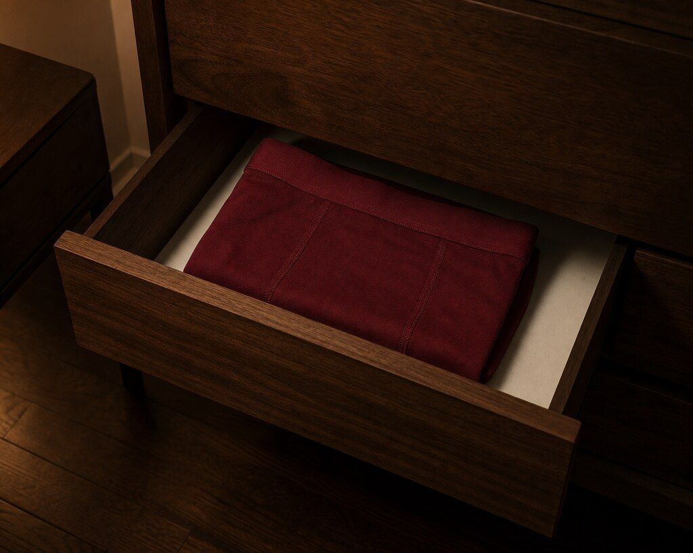
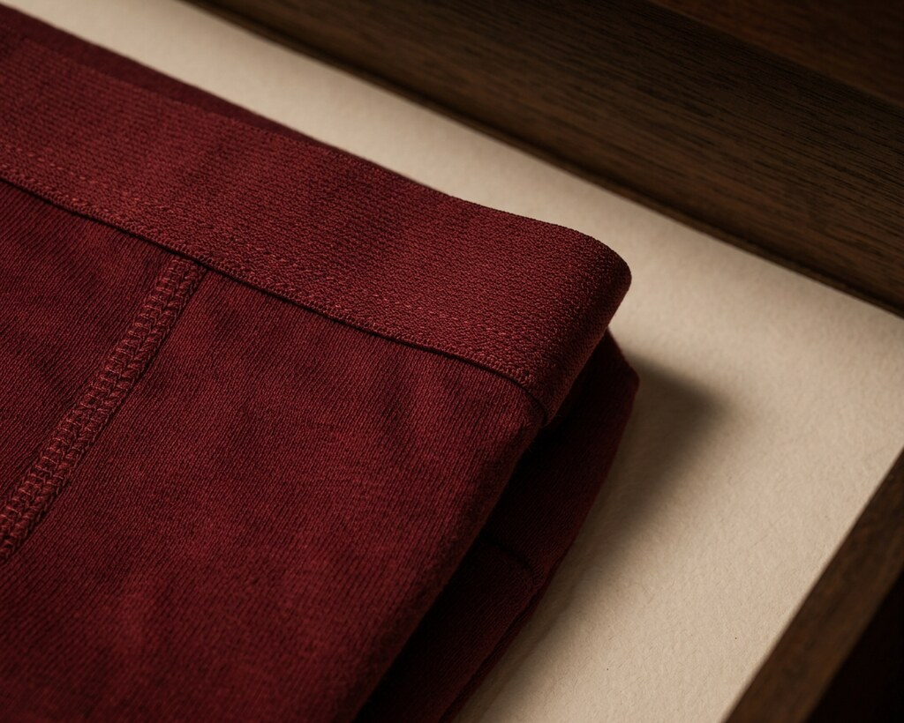

Frames B and C, run-02. Status: TESTED — AWAITING HUMAN REVIEW. No approval recorded.
shot-open-003 · run-02ca0ac612e0d00be0…4cbf
lineage: derivativeshot-open-004 · run-02e8bee9b5d10b69d8…34cb
lineage: derivative| Gate | Frame B | Frame C |
|---|---|---|
| Drawer geometry | Opening vs the 4.5-inch constraint | Consistency with the accepted Frame B |
| Inner-wall material | Verify visually | Verify the B→C match |
| Unwanted objects | Unapproved quilt or other intrusion | Visible scene boundaries |
| Branding | Full visible garment + surroundings | Visible fabric and edges |
| Garment specification | Colour, finish, visible construction | Colour, finish, visible construction |
| Continuity | Establish the accepted reference state | Verify consistency with that state |